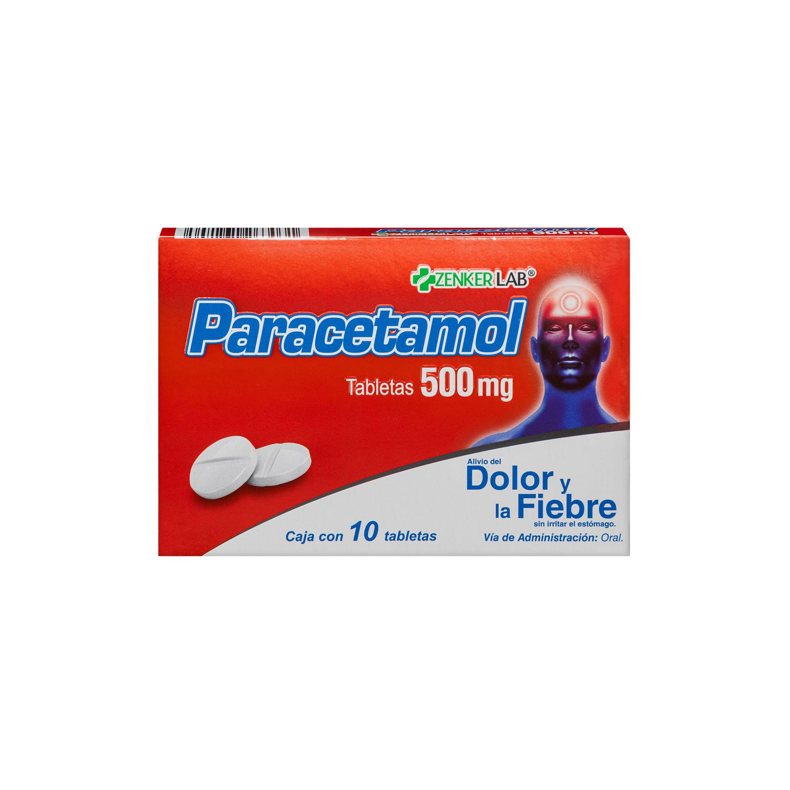

Paracetamol
Uso excesivo
Puede dañar el hígado, especialmente al combinar varios productos que lo contienen sin darse cuenta.
Usos
- Analgésico, antipirético
- Dolor asociado a resfriados
- Dolor musculoesquelético leve
Analgésico — respiración relajante
Siéntate con la espalda apoyada y los pies en el suelo. Inspira suavemente por la nariz contando hasta 5 y suelta el aire por la boca contando hasta 5, sin forzar ni aguantar la respiración. Repite durante 5 minutos.
Antipirético — hidratación
Bebe agua con frecuencia para mantener la orina de color amarillo claro. Evita la deshidratación, pero no baja directamente la fiebre.
Dolor asociado a resfriados — gárgaras
Disuelve media cucharadita de sal en un vaso de agua tibia. Haz gárgaras y escupe el líquido, sin tragarlo.
Dolor musculoesquelético leve — compresa fría
Envuelve una bolsa de hielo en una toalla y aplícala durante 15–20 minutos, cada 2–3 horas durante los primeros 2–3 días. Nunca pongas hielo directamente sobre la piel.